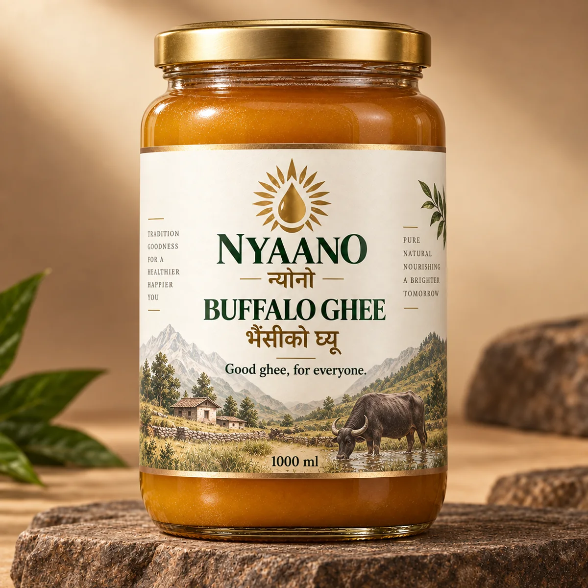

यो के हो?
NYAANO का दुई स्पष्ट उत्पादन हुन्: गाईको घ्यू र भैंसीको घ्यू। एउटै generic “dairy ghee” भनेर मिसाइएको पहिचान होइन।
Two distinct products: Cow Ghee and Buffalo Ghee.
NYAANO / न्यानो · नेपालका घरका लागि घ्यू
Cow ghee. Buffalo ghee. Clearly separate.
घरको परिचित स्वाद चाहने परिवारका लागि—तर प्याकमा के छ, कति छ र कुन batch हो भन्ने कुरा स्पष्ट हुने गरी।
Familiar everyday ghee for families who want local-style taste with clearer packaged-product accountability.

पहिलो ३० सेकेन्डमै बुझिने गरी
NYAANO का दुई स्पष्ट उत्पादन हुन्: गाईको घ्यू र भैंसीको घ्यू। एउटै generic “dairy ghee” भनेर मिसाइएको पहिचान होइन।
Two distinct products: Cow Ghee and Buffalo Ghee.
दाल–भात, रोटी, हलुवा, मिठाई र दैनिक पकाइमा घ्यू प्रयोग गर्ने परिवारका लागि। विशेष “wellness” niche होइन—घरको नियमित प्रयोग मुख्य हो।
Built primarily for everyday family cooking.
जनावरको स्रोत स्पष्ट, अलग product identity, batch accountability, declared net quantity र sealed pack लाई launch gate बनाइएको छ।
Trust is tied to identifiable, checkable pack standards—not vague purity language.
Target price positioning: उही size को राम्रो, भरोसायोग्य local ghee भन्दा करिब रु 100–150 माथि राख्ने लक्ष्य—packaging, traceability र accountability का लागि; luxury premium होइन। Final MRP unit economics पछि प्रकाशित हुन्छ।
Confirmed retail locations यही साइटमा राखिन्छन्। अहिले availability थाहा पाउन WhatsApp गर्नुहोस्।
Where to buy →WhatsApp availability →दुई उत्पादन · Two products
NYAANO Cow Ghee
परिचित, हल्का र दैनिक पारिवारिक प्रयोगका लागि बनाइँदै गरेको छुट्टै cow-ghee product.

NYAANO Buffalo Ghee
गाढा र full-bodied स्वाद मन पराउने परिवारका लागि छुट्टै buffalo-ghee product.

NYAANO मा के फरक छ? · What is different
गाई भने गाई। भैंसी भने भैंसी। अस्पष्ट “dairy ghee” identity होइन। Product name र pack architecture बाट source स्पष्ट राख्ने।
बेचिएको jar कुन production batch सँग सम्बन्धित छ भन्ने trace गर्न मिल्ने commercial standard.
Retail shelf मा पुगेको pack पहिले खोलिएको हो कि होइन भन्ने ग्राहकले देख्न सक्ने packaging control.
Trusted local ghee नजिकैको pricing; accountability का लागि सानो premium, “luxury wellness” markup होइन।
दाबीभन्दा मापदण्ड · Standards before claims
यी NYAANO का commercial launch gates हुन्। कुनै batch ले यी आधार पूरा नगरेमा त्यो batch लाई NYAANO का रूपमा बेच्ने मापदण्ड छैन।
Commercial pack मा declared net quantity पूरा हुनु आधारभूत requirement हो।
बेचिने pack उत्पादन batch सँग trace गर्न मिल्ने गरी चिनाइने standard.
Cow Ghee र Buffalo Ghee छुट्टाछुट्टै product identity का रूपमा राखिन्छन्—ambiguous blend होइन।
Customer सम्म पुग्दासम्म pack integrity जोगाउने seal commercial release requirement हो।
ग्राहक शिक्षा · How to identify good ghee
रंग, सुगन्ध, जम्ने/नजम्ने, दाना पर्ने वा fridge test मात्रले purity प्रमाणित गर्दैन। यी कुरा दूधको source, मौसम र processing अनुसार बदलिन सक्छन्। Adulteration को निश्चित उत्तर चाहियो भने proper laboratory testing चाहिन्छ।
Pack ले cow, buffalo वा blend के हो स्पष्ट बताएको छ कि छैन?
Manufacturer/packer को नाम, ठेगाना र लागू हुने registration/license information उपलब्ध हुनुपर्छ।
Batch/lot identity, packed/manufactured date र best-before/expiry information स्पष्ट छ कि छैन?
Cap, liner वा tamper evidence intact हुनुपर्छ। Leaking, opened वा damaged jar नकिन्नुहोस्।
Declared quantity स्पष्ट हुनुपर्छ। “भारी jar” लाई product weight भनेर नमान्नुहोस्।
Sensory clues उपयोगी हुन सक्छन्, तर adulteration प्रमाणित गर्न qualified laboratory testing नै भरपर्दो बाटो हो।
NYAANO principle: ग्राहकलाई “हामीलाई विश्वास गर्नुहोस्” मात्र नभनी, के जाँच्ने भनेर पनि सिकाउने।
Pack proof · प्याक देखेरै बुझिने
हामी mockup लाई “real production proof” भनेर देखाउँदैनौं। तलका front visuals हालको pack design renders हुन्। पहिलो commercial batch pack भएपछि वास्तविक back-pack photo यही section मा replace गरिनेछ।


Rear label मा batch code, net quantity, manufacturer/packer details, dates र लागू हुने regulatory information स्पष्ट देखिनुपर्छ। Final commercial pack verified भएपछि फोटो प्रकाशित हुन्छ।
हामी कसरी control गर्छौं · Our standard
Input/source lot को identity documented हुने standard.
Cow र buffalo variant लाई अलग product run / batch identity का रूपमा control गर्ने।
Pack, quantity, identity र defined QC checks पूरा भएपछि मात्रै commercial release.
बिक्रीयोग्य pack ले traceable batch र intact seal बोकेर shelf मा पुग्ने।
कहाँ पाइन्छ? · Where to buy
अहिले तपाईंको area मा NYAANO उपलब्ध छ कि छैन भनेर सीधै WhatsApp मा सोध्नुहोस्। Location लेख्नुहोस्; team ले confirmed availability मात्र बताउनेछ।
Retailer / Distributor
Retailer economics onboarding अघि rate card मा स्पष्ट गरिनेछ। Direct channel बाट retailer MRP undercut नगर्ने operating principle.
Forced overstock होइन—sell-through र reorder signal अनुसार controlled supply बनाउने लक्ष्य।
Cow र Buffalo स्पष्ट छुट्टाछुट्टै। “यो mixed हो कि होइन?” भन्ने confusion घटाउने सरल shelf story.
दुई products, दुई clear taste profiles, दुई pack sizes. Staff ले 20 seconds मा customer लाई बुझाउन सक्ने range.